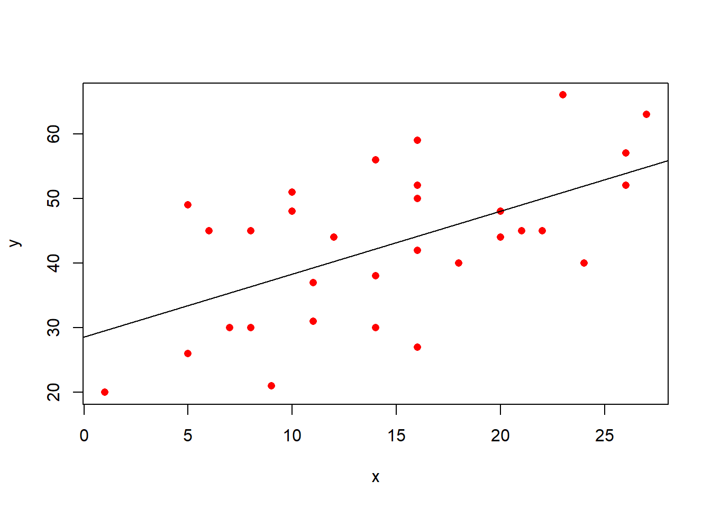
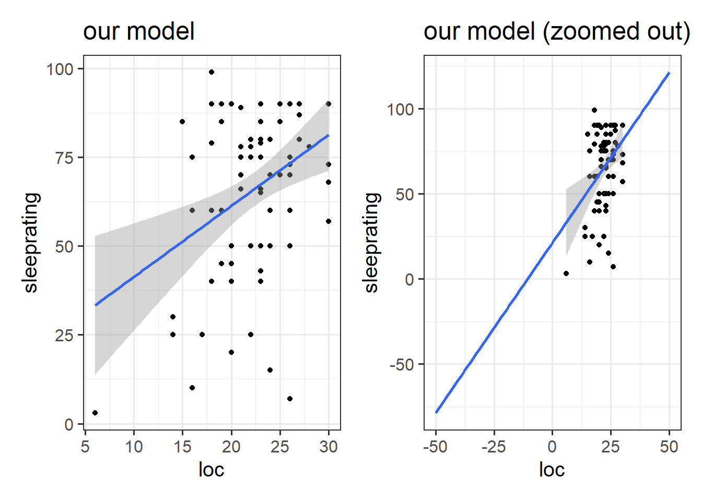
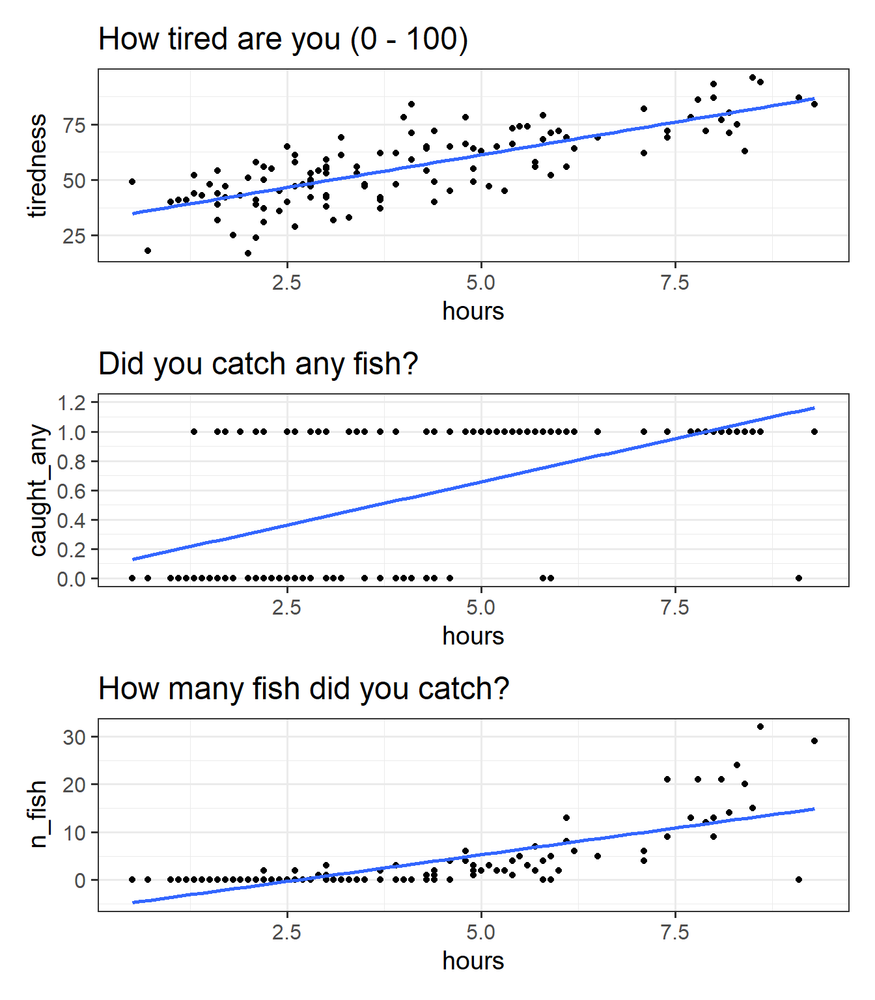
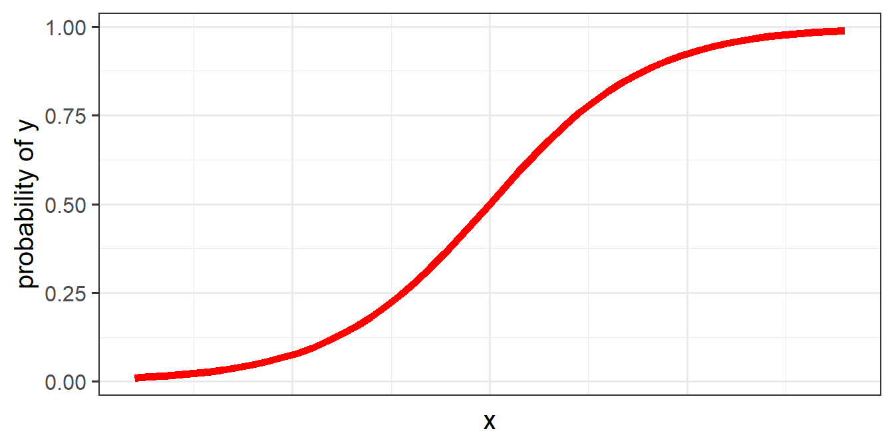
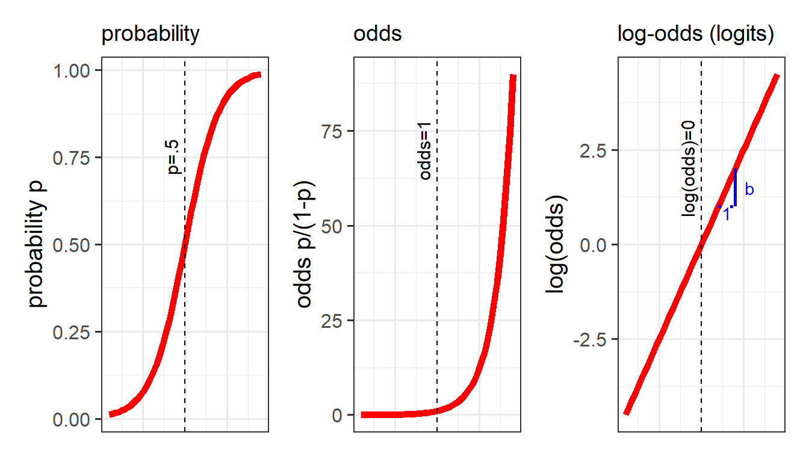
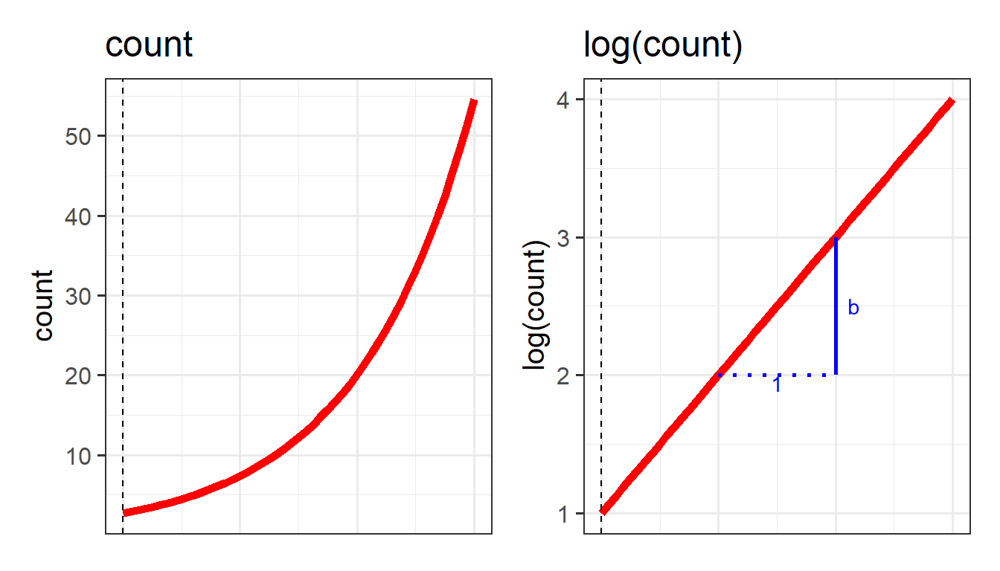
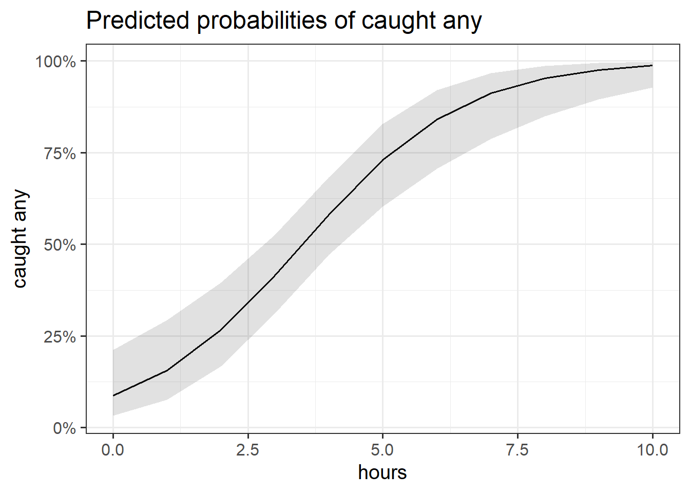
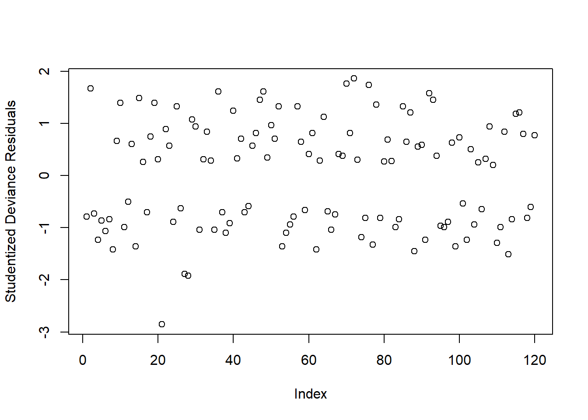
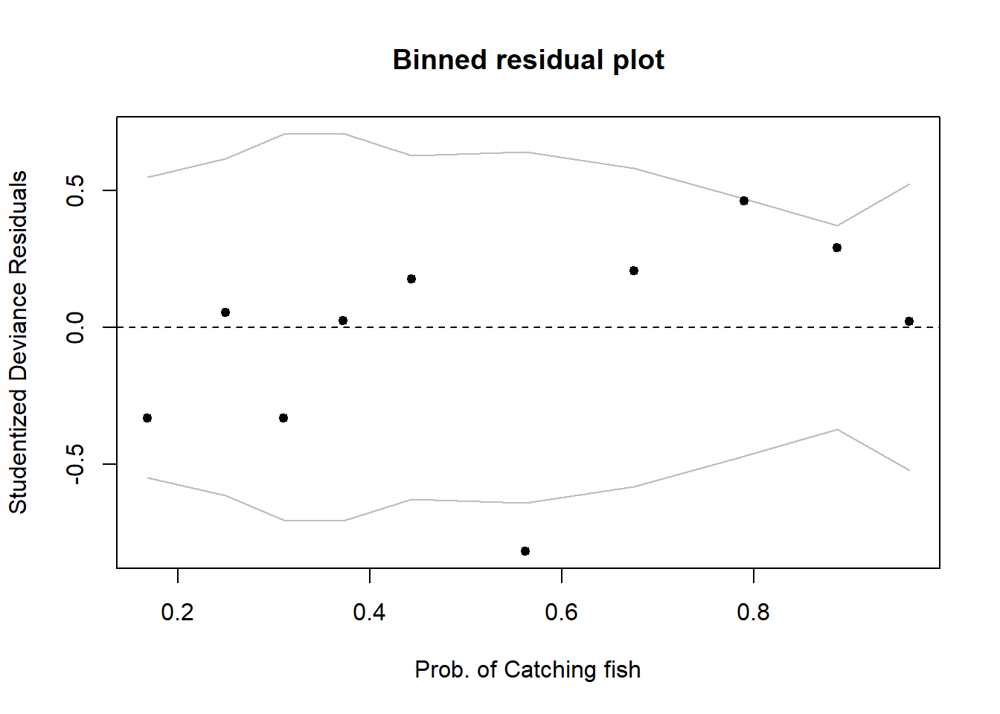

10A: The generalised linear model
Quick recaps
Continuous outcomes!
In all of the models thus far, we have been dealing with outcomes variables that are continuous. These are variables for which an observation can take any real value - i.e. 3.4, or 1.50365, or 0.000532. We might not have have measured these variables with any degree of accuracy, but the models we have been fitting have fundamentally assumed this.
For instance, even if our outcome is the “sleep quality rating” from our class survey, measured in whole numbers from 0 to 100, our model predictions will be values that are much more specific, and my model predicted sleep quality might be 36.54374. This is because we are modelling a continuous line through the sleep quality ratings. This also means that the model extends to scores of from negative to positive infinity (\(- \infty < y < \infty\)), even though we know our scale is bounded at 0 and 100 (see Figure 2).
Often, this is a perfectly acceptable thing to do, especially when we consider the outcome variable to be measuring a continuous thing (e.g. sleep quality), just hindered by the precision of measurement, and when the bounds of our measurement tool are not preventing us from capturing variation (e.g. if everyone rates sleep as 100, there is no variance to explain).
Code
library(tidyverse)
library(patchwork)
usmr <- read_csv("https://uoepsy.github.io/data/usmr2022.csv")
ggplot(usmr, aes(x = loc, y = sleeprating)) +
geom_point() +
geom_smooth(method=lm) +
labs(title="our model") +
ggplot(usmr, aes(x = loc, y = sleeprating)) +
geom_point() +
geom_smooth(method=lm) +
geom_smooth(method=lm, se = FALSE, fullrange = TRUE) + xlim(-50,50) +
labs(title = "our model (zoomed out)")
Other outcomes
There are lots of variables that we collect that don’t fit with this way of thinking. For instance, what if we want to model something that takes the form of a binary variable:1.
- being Y vs not being Y
- Y happening vs Y not happening
For binary variables, values can only take one of two values, which we often encode as 0 or 1. Values can’t be 0.5, -2, or 1.3, they can only be 0 or 1.
Another type of outcome that we can’t really model as continuous is count variable:
- The number of Y’s
- How many times Y happened
For count data, values can’t take any real number, they can only take integers (0, 1, 2, 3, …).
An example
At a lake, I survey 120 people who have just finished fishing for the day. I’m interested in how the length of time they spent fishing is associated with:
- how tired they are from 0 to 100 (continuous)
- catching any fish (binary, 1 = yes, 0 = no)
- the number of fish caught (count)
We can try at first to visualise all these relationships as scatterplots (Figure 3).
We can happily model our first outcome, tiredness, with a linear model. In Figure 3 (top panel), we can see that the relationship looks linear, and the residuals are spread fairly consistently above and below the fitted line.
For the binary outcome however (middle panel), there are a couple of things that are problematic. For someone who spends 8 hours fishing, the model estimates approximately 1.1 “catching any fish”. But what does that 1.1 really mean? Does it mean that if I fish 8 hours I will have 1.1 fish? no, because it’s not a count. Does it mean there is a 110% probability of catching fish? This is closer, but again it doesn’t make much sense - how can we have a probability of 115%?
For the count variable (bottom panel), we can also see that the standard lm model looks problematic. Again it estimates values we simply cannot have (it looks like if i spend 1 hour fishing I will catch about negative 3 fish?). Another thing to note is that the variance in the points on the y axis tends to increase as we get higher. This is typical of count data - we’re going to see lots of people catching 0, 1 or 2 fish, and so the “people catching few fish” are all quite close (in number of fish) to one another, but because fewer people catch 20 fish, 30 fish etc, there is a lot more variability in “number of fish” when we get higher up. This is a problem for a linear model, which assumes constant variance across the fitted model.
Code
fish <- read_csv("https://uoepsy.github.io/data/fishing_exped.csv")
p1 <- ggplot(fish, aes(x = hours, y = tiredness)) +
geom_point() +
labs(title="How tired are you (0 - 100)") +
geom_smooth(method=lm, se=FALSE)
p2 <- ggplot(fish, aes(x = hours, y = caught_any)) +
geom_point() +
labs(title="Did you catch any fish?") +
geom_smooth(method=lm, se=FALSE) +
scale_y_continuous(limits=c(0,1.2),breaks=seq(0,1.2,.2))
p3 <- ggplot(fish, aes(x = hours, y = n_fish)) +
geom_point() +
labs(title="How many fish did you catch?") +
geom_smooth(method=lm, se=FALSE)
p1 / p2 / p3
Introducing the GLM
To deal with these sorts of outcome variable, we need to learn about the Generalised Linear Model (GLM).
The GLM involves a little bit of trickery, in which we translate something that is inherently not linear (e.g. the probability of Y, or the increase in numbers of Y) into something which is both linear and unbounded, and model that instead.
The problem, fundamentally, is that probability is not linear. We think of it as getting ever and ever closer, but never reaching - 0 and 1 (Figure 4)

To use our linear toolbox for probability, we can’t think in terms of modelling how \(x\) influences the probability of \(y\) directly, but we can model it in terms of how it influences the “log-odds of \(y\)”. The same is true for count data: instead of modelling counts directly, we can model the log of the counts.
Probability, odds, and log-odds
If we let \(p\) denote the probability of a given event, then:
- \(\frac{p}{(1-p)}\) are the odds of the event happening.
For example, the odds of rolling a 6 with a normal die is 1/5 (sometimes this is expressed ‘1:5’, and in gambling the order is sometimes flipped and you’ll see ‘5/1’ or ‘odds of five to one’).
If we ever need to convert between the two:- \(odds = \frac{p}{(1-p)}\)
- \(p = \frac{odds}{1 + odds}\)
- \(odds = \frac{p}{(1-p)}\)
- \(ln(\frac{p}{(1-p)})\) are the log-odds of the event.

Conversions
Between probabilities, odds and log-odds (“logit”):
$$ \[\begin{align} &\text{for probability of Y for observation i:}\\ \qquad \\ odds_i & = \frac{p_i}{1-p_i} \\ \qquad \\ logit_i &= log(odds_i) = log(\frac{p_i}{1-p_i}) \\ \qquad \\ p_i & = \frac{odds_i}{1 + odds_i} = \frac{e^{logit_i}}{(1+e^{logit_i})} \end{align}\] $$
Counts and log-counts
We can apply the same log transformation to count data in order to think about how we might consider an association on a linear

This little trick allows us to be able to talk about linear associations between predictors and the log-odds of an event, or between predictors and log-counts. In Figure 5, and Figure 6 above, we can see that by talking in terms of log-odds, or log-counts, we can model something that is linear and unbounded. So when we think about these models, what we are really have in mind is that we are capturing the associations seen in the right hand plots of Figure 5 and Figure 6.
The Generalised Linear Model
In its general form, the GLM looks pretty similar to the standard LM.
we can write it as:
\[ \color{green}{g(\color{red}{y})} = \mathbf{\color{blue}{b_0 + b_1(x_1) + ... + b_k(x_k)} } \]
The difference is that \(\color{green}{g}\) is a function (like log, or logit) that links the expected value of \(\color{red}{y}\) to the linear prediction of \(\color{blue}{b_0 + b_1(x_1) + ... + b_k(x_k)}\).
Fitting GLM in R
In order to fit these models in R, we need to use the glm() function. This is (unexpectedly) a generalised form of the lm() function we have been using. The only difference is that we need to also tell the function the family of the response variable, and the “link function” (the mapping we use to get from the thing we want to model to the thing we actually model, e.g. "log", or "logit" (log-odds)).
Linear Regression
Outcome \(y\) is continuous \(y \in (-\infty, \infty)\)
\[ \color{red}{y} = \mathbf{\color{blue}{b_0 + b_1(x_1) + ... + b_k(x_k)}} \]
linear_model <- lm(continuous_y ~ 1 + x1 + ... xk, data = df)As it happens, lm() is just a special case of this, where we use the “gaussian” family (Gaussian is another term for ‘normal’), with the “identity” link function (the identity function is just saying ‘model y directly’):
glm(continuous_y ~ 1 + x1 + ... xk, data = df,
family = gaussian(link = "identity"))Logistic Regression
Outcome \(y\) is binary, \(y \in [0,1]\)
\[ \begin{align} \color{red}{ln \left( \frac{p}{1-p} \right) } &= \mathbf{\color{blue}{b_0 + b_1(x_1) + ... + b_k(x_k)}} \\ \qquad \\ \text{where } \color{red}{p} &= \text{probability of event }y\\ \end{align} \]
logistic_model <- glm(binary_y ~ 1 + x1 + ... xk, data = df,
family=binomial(link="logit"))family = binomialandfamily = "binomial"will also work.- the outcome can either be 0s and 1s, or coded as a
factorwith 2 levels.
Poisson Regression
Outcome \(y\) is positive \(y \in (0, \infty)\)
\[ \color{red}{ln (y) } = \mathbf{\color{blue}{b_0 + b_1(x_1) + ... + b_k(x_k)}} \]
poisson_model <- glm(count_y ~ 1 + x1 + ... xk, data = df,
family=poisson(link="log"))family = poissonandfamily = "poisson"will also work
Logistic Regression
For the remainder of this reading, we’re going to leave discussions of Poisson regression and focus on working with binary outcomes using logistic regression, which you are much more likely to encounter in your reading/research. A lot of the logic of these models transfers across to when we work with count data, but you will not need poisson regression for any assignment on this course.
Let’s return to our fishing example, and fit a model in which we predict “having caught some fish” by the number of hours spent fishing.
Practically, speaking, this quite straightforward. We have a binary outcome (1 = caught fish, 0 is didn’t catch fish), so we’ll fit a logistic regression. We have a single predictor, which is “hours spent fishing”:
fish <- read_csv("https://uoepsy.github.io/data/fishing_exped.csv")
fishmod <- glm(caught_any ~ hours, data = fish,
family = binomial(link="logit"))
summary(fishmod)
Call:
glm(formula = caught_any ~ hours, family = binomial(link = "logit"),
data = fish)
Deviance Residuals:
Min 1Q Median 3Q Max
-2.7450 -0.8866 0.2910 0.8161 1.8381
Coefficients:
Estimate Std. Error z value Pr(>|z|)
(Intercept) -2.3567 0.5322 -4.428 9.50e-06 ***
hours 0.6704 0.1377 4.870 1.12e-06 ***
---
Signif. codes: 0 '***' 0.001 '**' 0.01 '*' 0.05 '.' 0.1 ' ' 1
(Dispersion parameter for binomial family taken to be 1)
Null deviance: 165.15 on 119 degrees of freedom
Residual deviance: 127.70 on 118 degrees of freedom
AIC: 131.7
Number of Fisher Scoring iterations: 5Interpretation of Coefficients
An important result of our model capturing the linear associations between the predictors and the log-odds of outcome Y, is that our coefficients are all in these units.
summary(fishmod)
Call:
glm(formula = caught_any ~ hours, family = binomial(link = "logit"),
...
Coefficients:
Estimate Std. Error z value Pr(>|z|)
(Intercept) -2.3567 0.5322 -4.428 9.50e-06 ***
hours 0.6704 0.1377 4.870 1.12e-06 ***(Intercept): the log-odds of having caught some fish when spending zero hours fishing are -2.36.
hourscoefficient: for every hour someone has spent fishing, the log-odds of them having caught some fish increase by 0.67.
If you’re anything like me, these are not the most useful interpretations. I have no idea what increasing 0.67 log-odds means in real terms. What we can do instead is translate these back into odds, which might make things easier. The opposite of the natural logarithm is the exponential (see here if you’re interested). We can turn \(log(x)\) back into \(x\) by raising \(e\) to the power of it: \(e^{\log(x)} = x\). In R, this is just the two functions log() and exp(): exp(log(2)) == 2.
This means we can turn our log-odds back into odds by using exp() on our coefficients! A crucial thing to note is that addition on the log-odds scale is the same as multiplication on the odds scale. A coefficient on the log-odds scale is interpreted the same way as we interpret normal linear regression coefficients: “if you go up 1 on X you add b on log-odds(Y)”. When we convert these coefficients to odds using exp(), the interpretation becomes “if you go up 1 on X, your odds are multiplied by exp(b)”.
We can see our exponentiated coefficients here:
exp(coef(fishmod))(Intercept) hours
0.09473306 1.95504622 The intercept is now the odds of having caught a fish when spending zero hours fishing: 0.09.
Because our intercept is at a single point (it’s not an association), we can actually convert this to a probability. Remember that \(odds = \frac{p}{1-p}\), which means that \(p = \frac{odds}{1 + odds}\). So the probability of catching a fish if I spend zero hours fishing is \(\frac{0.09}{1 + 0.09} = 0.08\).
Unfortunately, we can’t do the same for any of the slope coefficients. This is because changes in odds are not the same for different levels of probability.
Our best interpretation of our coefficient for hours is simply that for every hour someone has spent fishing, the odds of them having caught some fish are multiplied by 1.96.
Odds Ratios
When we exponentiate coefficients from a model fitted to the log-odds, the resulting association is referred to as an “odds ratio” (OR).
For every 1 unit increase in \(x\):
- “the odds of \(y\) change by a ratio of
exp(b)”
- “the odds of \(y\) are multiplied by
exp(b)”
- “there are
exp(b)increased/decreased odds of \(y\)”
Instead of thinking of a coefficient of 0 as indicating “no association”, in odds ratios this when the OR = 1.
- OR = 1 : equal odds (\(1 \times odds = odds \text{ don't change}\)).
- OR < 1 : decreased odds (\(0.5 \times odds = odds \text{ are halved}\))
- OR > 1 : increased odds (\(2 \times odds = odds \text{ are doubled}\))
 Often you will hear people interpreting OR as “\(y\) is
Often you will hear people interpreting OR as “\(y\) is exp(b) times as likely to occur”.
Although it is true that increased odds is increased likelihood of \(y\) occurring. Double the odds does not mean you will see twice as many occurrences of \(y\) (see the “I still don’t really get odds” box below).
Inference
Coefficient Tests
You might notice that the summary output of our logistic regression model has \(z\) statistics instead of \(t\) statistics. For logistic regression, the distribution of the estimated coefficients gets close and closer to a Normal distribution as the sample size gets larger. All of the tests are based on the hypothesis that the sample size is large enough4 to justify a normal approximation.
summary(fishmod)
Coefficients:
Estimate Std. Error z value Pr(>|z|)
(Intercept) -2.3567 0.5322 -4.428 9.50e-06 ***
hours 0.6704 0.1377 4.870 1.12e-06 ***The logic of the tests remains the same as it was for the linear model, where it is a test against the null hypothesis that the coefficient is zero. Or, less formally, we can think of the corresponding p-value as “in the null universe where there is no relationship between \(x\) and the occurrence of event \(y\), there is a p-value chance of seeing a sample of this size with an association as strong as the one we have got”
For every hour more someone spent fishing, the odds of them catching a fish increased by 1.96 (\(z = 4.87\), \(p < .001\)).
Confidence Intervals
As previously, we can obtain confidence intervals using the confint() function. Because confidence intervals are just lower and upper bounds for a range of plausible values for our estimates, we can turn these into the confidence intervals around our odds ratios!
exp(confint(fishmod)) 2.5 % 97.5 %
(Intercept) 0.03102087 0.2534272
hours 1.52614259 2.6275396For every hour more someone spent fishing, the odds of them catching a fish increased by 1.96 (95% CI [1.53 - 2.63]).
Visualising
While interpreting coefficients leaves us in speaking in the realm of odds-ratios, we can do more with visualisations! This is because we can simply display the predicted probability across values of some predictor. We don’t have to try and rely solely on a numerical description of a relationship - a picture speaks a thousand words (and it’s a lot easier!)
library(sjPlot)
plot_model(fishmod, type = "eff")$hours
Comparing models
When moving from linear regression to more advanced and flexible models, testing of goodness of fit is more often done by comparing a model of interest to a simpler one. The only caveat is that the two models need to be nested, i.e. one model needs to be a simplification of the other, and all predictors of one model needs to be within the other.
To compare models, we test the difference in deviance.
Deviance
Deviance is a measure of deviation/discrepancy/mismatch between the data and the model. You can think of it as a generalisation of the terms making up the residual sum of squares in simple linear regression, in that it measures the misfit, or badness of fit. This means (as it was for the residual sum of squares) that smaller deviance is better!
More technically, deviance is calculated as -2 times the log-likelihood.
- Likelihood = \(P(data | model)\) (the probability of seeing the sample data given our model). If we had a perfect model, this would be 1.
- if you want a (slightly) more in depth look at “likelihood”, see here.
- Log-likelihood = the log of the likelihood. The log transformation means that where likelihood ranges from 0 to 1, log-likelihood ranges from negative infinity to 0 (0 would be the perfect model)
- -2Log-likelihood = turns it from negative to positive, and allows us to test it against a \(\chi^2\) distribution.
For instance, we can compare our model to the model where all slopes are 0. The null hypothesis will be that the simpler model is a good fit, while the alternative is that the more complex model is needed.
In R we do this comparison as follows:
fishmod0 <- glm(caught_any ~ 1, data = fish,
family = binomial(link="logit"))
fishmod1 <- glm(caught_any ~ hours, data = fish,
family = binomial(link="logit"))
anova(fishmod0, fishmod1, test = 'Chisq')Analysis of Deviance Table
Model 1: caught_any ~ 1
Model 2: caught_any ~ hours
Resid. Df Resid. Dev Df Deviance Pr(>Chi)
1 119 165.15
2 118 127.70 1 37.45 9.378e-10 ***
---
Signif. codes: 0 '***' 0.001 '**' 0.01 '*' 0.05 '.' 0.1 ' ' 1The above code shows the two fitted models, amd reports the Residual Deviance of each model, 165.1 and 127.7 respectively. So by adding the predictor hours to the model, we reduce our deviance from 165.1 to 127.7, i.e. we reduce it by 37.4 (remember, deviance is like badness-of-fit, so smaller is better).
Is this reduction sufficient to be attributed solely to the contribution of the predictor, or could it just be due to random sampling variation? This is what the chi-squared test tells us!
Assumptions
Because these models don’t have the same expected error distribution (we don’t expect residuals to be normally distributed around the mean, with constant variance), checking the assumptions of logistic regression is a little different.
Typically, we look at the “deviance residuals”. But we don’t examine plots for patterns, we simply examine them for potentially outlying observations. If we use a standardised residual, it makes it easier to explore extreme values as we expect most residuals to be within -2, 2 or -3, 3 (depending on how strict we feel).
Deviance Residuals
There are three ways we can get out deviance residuals, each scaled differently
- \(i\)th residual = measure of deviance contributed from the \(i\)th observation
- \(i\)th standardized residual = residual / SD(residual)
- \(i\)th studentized residual = residual / SD(residual from model fitted without observation \(i\))
We get these in R using:
# deviance residuals
residuals(fishmod, type = 'deviance')
# studentised residuals
rstudent(fishmod, type = 'deviance')
# standardised residuals
rstandard(fishmod, type = 'deviance')We can check whether any residuals are larger than 2 or 3 in absolute value:
plot(rstudent(fishmod, type = 'deviance'),
ylab = 'Studentized Deviance Residuals')
Warning: Don’t inspect this plot for patterns!!!
There appears to be 1 residual with a value slightly larger than 2 in absolute value. We will keep these in mind and check later if they are also influential points (using cooks.distance)
Sometimes a binned plot5 can be more informative, but not always! It works by combining together all responses for people having the same covariate \(x_i\) value, and taking the average studentized Pearson residual for those.
Before using this function, make sure you have installed the arm package!
arm::binnedplot(fitted(fishmod), rstudent(fishmod, type = 'deviance'),
xlab = 'Prob. of Catching fish', ylab = 'Studentized Deviance Residuals')
There doesn’t appear to be any extreme residuals.
Footnotes
we have seen this type of variable already when looking at categorical predictors in our models, but we haven’t seen how we use it as the outcome↩︎
This means we will end up with a lot of multiplying (computationally expensive), and a tiny tiny number. So instead we typically talk about the log-likelihood, and use summation instead of multiplication. The log-likelihood of the two data points highlighted in Figure 10, given the line is
log(0.98)+log(0.88).↩︎\(e^{a+b} = e^a \times e^b\). For example: \(2^2 \times 2^3 = 4 \times 8 = 32 = 2^5 = 2^{2+3}\)↩︎
whatever ‘large enough’ is!↩︎
Gelman, A., & Hill, J. (2006). Data Analysis Using Regression and Multilevel/Hierarchical Models (Analytical Methods for Social Research). Cambridge: Cambridge University Press. doi:10.1017/CBO9780511790942↩︎